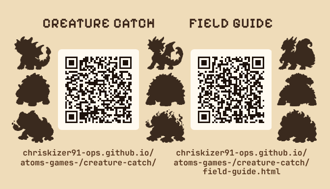
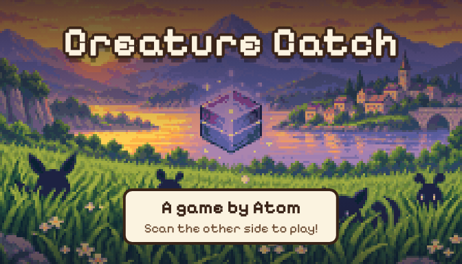
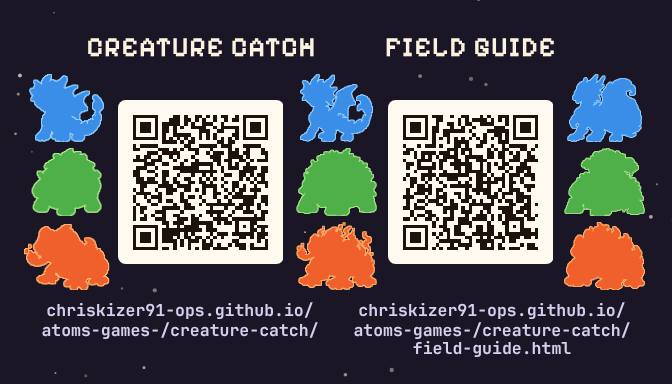
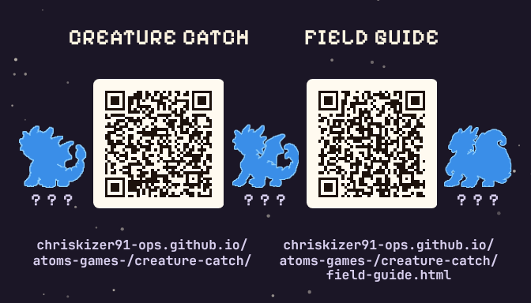
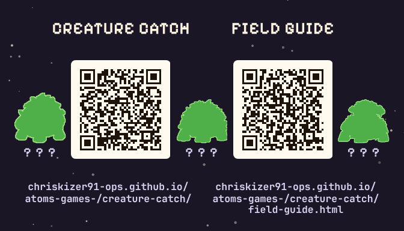
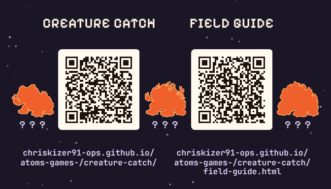
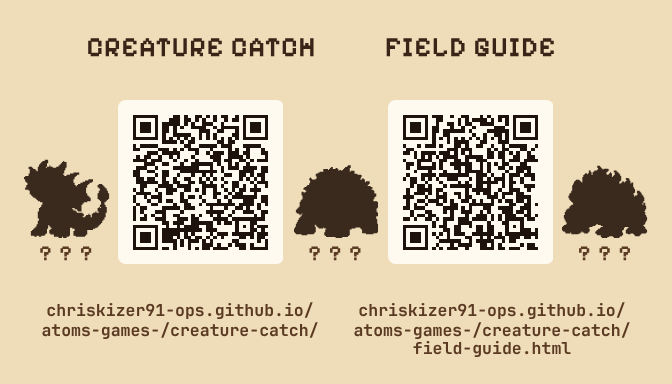

Creature Catch cards
Business cards for Atom's game: the game and the Field Guide, each with its web address and a QR code, and the three starters' shadows. Every card is 3.5 by 2 inches, the standard size. All six fronts share one back.
All nine, journal
1 of 6All three starters. First forms on the left, second forms between the codes, final forms on the right; each row is one family. Ink shadows on Creature Log paper.


Print files: all-nine-journal.pdf (10 a sheet) or print/all-nine-journal-front.png with print/back.png (print shop).
All nine, night sky
2 of 6The same nine on a night sky, each shadow in its type color: Water blue, Plant green, Fire orange.

Print files: all-nine-night.pdf (10 a sheet) or print/all-nine-night-front.png with print/back.png (print shop).
Water family
3 of 6Drizzlon, Rapidrake and Tsunadrake, one big shadow each.

Print files: water-family.pdf (10 a sheet) or print/water-family-front.png with print/back.png (print shop).
Plant family
4 of 6Mossback, Thornshell and Elderoak, one big shadow each.

Print files: plant-family.pdf (10 a sheet) or print/plant-family-front.png with print/back.png (print shop).
Fire family
5 of 6Embroak, Cinderfrog and Infernotoad, one big shadow each.

Print files: fire-family.pdf (10 a sheet) or print/fire-family-front.png with print/back.png (print shop).
One of each
6 of 6A first form, a second form and a final form, each from a different family: Drizzlon, Thornshell and Infernotoad.

Print files: one-of-each.pdf (10 a sheet) or print/one-of-each-front.png with print/back.png (print shop).
What the codes open
- Left code, Creature Catch: https://chriskizer91-ops.github.io/atoms-games-/creature-catch/
- Right code, Field Guide: https://chriskizer91-ops.github.io/atoms-games-/creature-catch/field-guide.html
Printing
- At home: the PDF matches the usual 10-to-a-sheet business card paper (2 across, 5 down, like Avery 5371 or 8371). Print at 100% ("Actual size"), two-sided, flipping on the long edge. Page 1 is the fronts, page 2 the backs.
- At a print shop: upload the front and back pictures. They're 300 dpi with 1/8 inch extra on every side to be trimmed off.
- Every QR code was read back from the 300 dpi picture, at full size and shrunk down like a phone photo, before these files were kept.